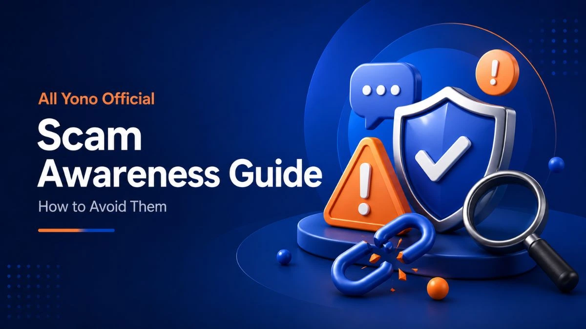

Is Yono App Safe? Common All Yono Official Scams and How to Avoid Them

"Is Yono app safe?" is one of the most common questions people search before downloading any app in this category. The honest answer is: the apps themselves are not run or owned by All Yono Official, and most of the real risk doesn't come from the app — it comes from scams built around it. This guide brings together the scam patterns we see repeatedly, in one place, so you can recognize them quickly regardless of which specific app you're using.
Why This Page Exists
Several of our guides already cover individual risk areas in depth — promo codes, referral codes, and withdrawals and payments. This page is the short version that ties them together: the same handful of scam patterns show up again and again, just wearing a different app's name each time.
| Scam Pattern | How It Shows Up | Where to Read More |
|---|---|---|
| Fake referral/promo codes | Bundled with a request for OTP, password, or a "processing fee" | Referral code safety |
| Cloned or lookalike links | A domain that looks almost right, shared in a forwarded message | Link checking basics |
| "Unlock your withdrawal" fees | A message asking for payment before a withdrawal is "released" | Withdrawal & payment safety |
| Fake customer support | Unofficial numbers or chat accounts asking for account access | Customer support guide |
| "Guaranteed bonus" pressure tactics | Urgency language like "last slot" or "expires in 5 minutes" | Promo code & bonus safety |
The One Rule That Covers Most of These
Almost every scam pattern above collapses down to the same rule: a real bonus, referral, or withdrawal never requires your OTP, password, PIN, or an upfront payment to work. If any message asks for one of those alongside a "reward," that's the tell — not the app name, not the amount offered, not how official the message looks.
How to Verify Before You Act
Before entering a code, tapping a link, or replying to a "support" message, take a moment to check the source. Is it a link you navigated to yourself, or one someone sent you? Is the person asking for anything beyond the code or basic details? Does the offer pressure you to act immediately? Our FAQs page and app guide for new users cover the basic verification habits worth building regardless of which app you're using.
What All Yono Official Does and Doesn't Do
All Yono Official lists publicly available information about third-party apps — it does not run these apps, issue referral codes on their behalf, or process withdrawals. Any message claiming to be "All Yono Official support" asking for money or account access is not us. If you're ever unsure whether a link or message is genuinely tied to this site, our Contact Us page is the place to check.
Final Note
Most scams in this space rely on speed and pressure, not sophistication. Slowing down for a minute to check the source, the domain, and whether personal details are being requested handles the majority of them. For deeper reading on a specific risk area, see the linked guides above, or browse the full All Yono Official blog.
AllYonoOfficial.com does not run or own the apps listed here. The rummy app can be addictive and risky financially, so use them carefully. Only for 18+ people.
Please read our Disclaimer page and the specific disclaimer for each app.
Alert: Rummy, a skill-based game, is banned by the government in Andhra Pradesh, Sikkim, Nagaland, Assam, Arunachal Pradesh, Tamil Nadu, Odisha, and Telangana.